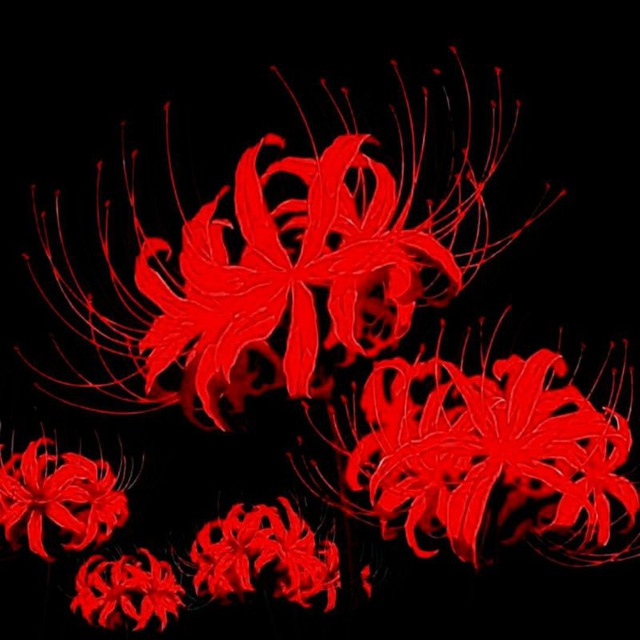

Выберите нужную суру и аят выше, чтобы увидеть текст и толкование.

'">
Fallout-rtg
Разработчик бота и создатель проекта
Проект разработан с целью упростить доступ к изучению Священного Корана, русскому переводу смыслов Э. Кулиева и толкованию (тафсиру) шейха ас-Саади прямо из вашего смартфона.
Open Source
Исходный код полностью открыт и доступен на GitHub: